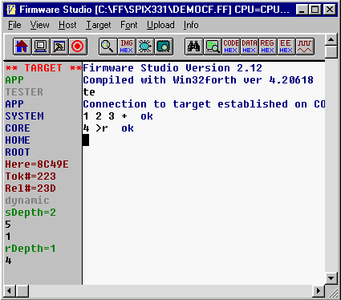
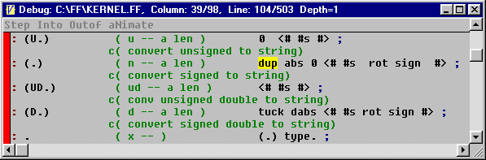

Firmware Studio Development Environment
| Host | Builder | Tester | Tokenizer | Forthing |
Tester Interpreter
Tester mode is for interactive testing of machine code resident on target hardware. You can't define new definitions in this mode, since it's not set up to extend target code. Forthing mode is for doing that. The interpreter in tester mode calls words via a debug monitor running on the target board.

You can enter tester mode by typing TE or TESTING, or by invoking the high level debugger.
In tester mode, the left margin displays target parameters below the search order. Here is the next available code byte on the target system. Tok# is the next available token number used by the host. Rel# is the lowest unused token on the target system. These last two parameters aren't of much interest in this mode. See Forthing mode (next section).
The type of call indirection is important. The tester's interpreter calls a word's physical address in static mode, or computes its address from it's xt and calls into the binding table in dynamic mode. If addresses are unknown, you have to use dynamic mode. If you're working without a binding table (as in regular Forth) you use static mode.
The contents of both stacks are displayed, which is very convenient for single stepping. The high level debugger uses Tester mode. A text window displays source code of a word and highlights the next word to be executed:

In this example, pressing the space bar will cause the target's debugger to execute dup and will move the yellow cursor to abs. This example was invoked by BUG (.).
Tester Wordlist
The following words are in the TESTER wordlist. Their definitions are in TAR.G. In Testing mode, the interpreter searches this wordlist first. The interpreter executes the word if it's found. If the word was a target word, the interpreter uses the debugger link to call the word. A word that's not found is converted to a number and pushed onto the target's stack..
The search order during building generally goes something like TESTER ... CORE ... HOME. The HOME vocabulary is a catch-all for words that execute on the host PC. If you define a target word that has the same name as a word in the HOME wordlist, that word will mask the home wordlist's version. If this causes a problem, you can place the desired HOME wordlist words within {{ }} brackets.
| ' | ( <name> -- ) | Pushes xt of name onto the target's data stack. |
| ( -- xt ) | ||
| TO | ( <name> -- ) | Executes name and (%TO!) |
| ( x -- ) | ||
| IF | ( -- ) | Get flag from target, skip source until next THEN or ELSE if it's 0. |
| ( flag -- ) | ||
| ELSE | ( -- ) | Skip source until next THEN |
| THEN | ( -- ) | Do nothing. |